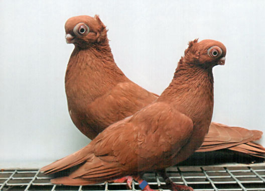
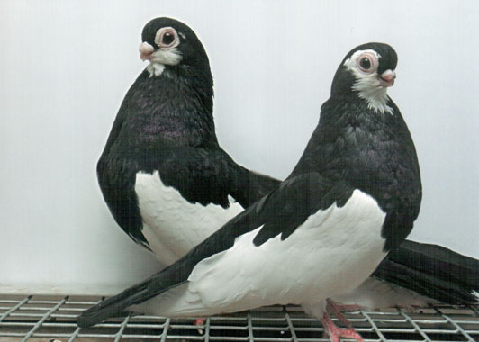
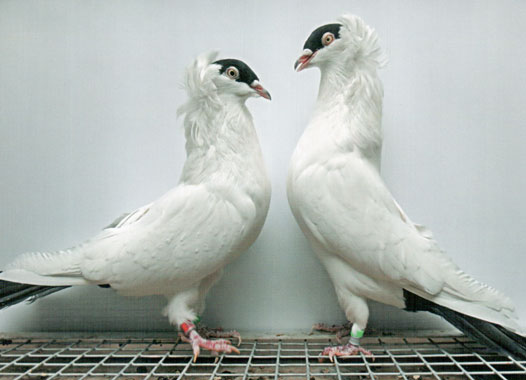
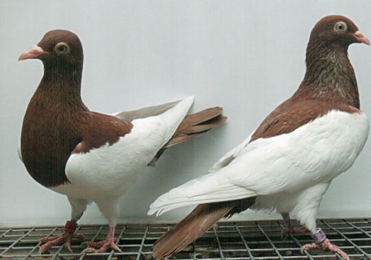
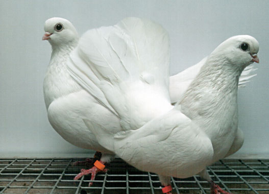

МЕНЮ
ПИТОМНИК
ПОЧТОВЫХ
ГОЛУБЕЙ
ПОЛЁТ
маленькие голуби приносят большие новости
Тульский желтый турман |
Старая порода, выведена в г. Туле. Очень красивые, изящные голуби. Порода сложная в разведении. Популярна в Москве и Московской области, средней полосе России. В нашем питомнике содержится более 2 лет. 7500p |
|---|---|
Турман черно-пегий |
Старая порода, выведена в средней полосе России. На выставках демонстрируется с 1980 г. Очень красивые, изящные голуби. Раньше птицы этой породы обладали хорошими качествами, в настоящее время находятся на вольерном содержании. Порода сложная в разведении. Популярна во всем мире. В питомнике содержится более 5 лет. Любимая порода президента клуба «Русский турман» генерал-лейтенанта ФСБ В.К. Ваевского 8000p |
Московский монах черный |
Порода выведена в г. Москве в начале VII века. Изящные, грациозные, неприхотливые голуби. Свое название птицы получили за окраску, похожую на монашеское одеяние — цветную шапочку на голове и такого же цвета хвост, а также за привычку летать отдельно от стаи. Очень красивый, своеобразный, круговой лет над домом. Порода легкая в разведении. Популярна в Москве и Московкой области. Неоднократные чемпионы и абсолютные чемпионы выставок на протяжении 10 — 15 лет. 13000p |
Казанский шпанцирь-панцирный

|
Порода выведена в Казани (респ. Татарстан). Очень грациозные, изящные, красивые, неприхотливые голуби. Рисунок оперения сорочий: крылья, нижняя часть груди, живот, бедра и пах чисто-белые. Неповторимый красивый лет над домом. Популярна в России и ближнем зарубежье. В питомнике «Полёт» содержится более 2 лет. 10000p |
Крюковский высоколетный белый |
Порода выведена на Украине и названа в честь г. Крюкова. Изящные, грациозные, неприхотливые голуби с прекрасными летными качествами. Особенно ценятся экземпляры, которые ходят на пальчиках. Порода легкая в разведении. Популярна в России и ближнем зарубежье. В питомнике содержится более 10 лет. 14500p |